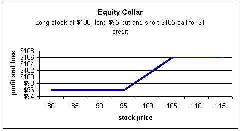
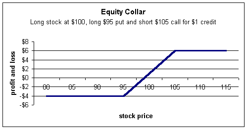
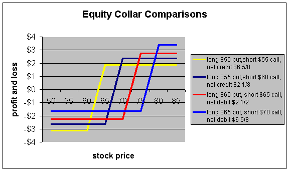
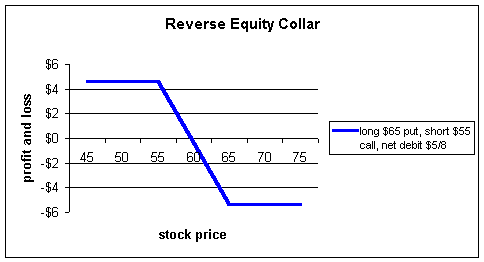

The equity collar or sometimes just collar is a popular strategy among institutional and floor traders. It can also a great strategy for retail investors, although most are unfamiliar with it.
Equity collars involves long stock paired with a long put and short call to provide limited upside profits in exchange for limited downside losses.
Assume an investor is long 1,000 shares of stock at $100. He is willing to sell the stock at $105, but is also worried about the downside risk. He could sell the $105 calls, and use those proceeds to finance the long $95 puts. These three positions, long stock, short call, and long put make up an equity collar.
There is no reason this investor must sell the $105 call and buy the $95 put. Instead, he could sell the $100 call and buy the $100 put, or sell the $110 call and buy the $100 put. There are many ways to position the collar including out-of-the-money, at-the-money and in-the-money options. Each has a unique set of risks and rewards and we will look at many variations.
First, notice a couple of things about the collar. The above investor was long stock and then sold the $105 calls -- a covered call position. However, the risk of a covered call is to the downside (please see our section on "Covered Calls" and "Synthetics" if you are not sure why). So to reduce the downside risk, the investor used the proceeds from the sale of the calls to buy the puts.
If the stock rises above $105, he will be forced to sell his stock for $105 per share regardless of how high it goes. But if the stock falls, he can always elect to sell the shares for $95 per share.
From a profit and loss standpoint, the collar looks like this:
We are assuming this investor paid $100 per share for the stock, sold the calls, and bought the puts for a credit of $1. If the stock falls below $95, he will exercise the put and receive $95 for a total profit of $96 after taking into account the $1 credit. Bear in mind that the investor paid $100 for the stock, so this is still a $4 loss overall.
If the stock rises above $105, he will be assigned on the short calls and be forced to sell the stock for $105. With the $1 credit, this yields a profit of $106 for any stock price above $105. Because the investor paid $100 for the stock, a $6 profit is made for any stock price above $105.
Sometimes it is easier to view the profit and loss diagram to take into account the cost of the stock. We can view the above chart by subtracting out the $100 cost for the stock and see the true profits and losses for all stock prices:
If you read our section on "Basic Spreads" and "Synthetics," you may have noticed the above profit and loss diagram looks very much like a bull spread. In fact, the collar strategy is a synthetic bull spread. Also, you may remember the three-sided position used by market makers called a conversion. Because the strike prices are unequal in this example, this strategy is sometimes called a split-price conversion.
If you're still not sure why it is the same as a bull spread, the following may help. Keep in mind that a bull spread with the above positions would be long $95 call and short $105 call.
Collar = Long stock + long $95 put + short $105 call
Synthetically, the long $95 put = short stock + long $95 call
So replace the long $95 put with short stock and long $95 call as follows:
Collar = Long stock + (short stock + long $95 call) + short $105 call
The long and short stock cancel out and you're left with a long $95 call + short $105 call -- a bull spread.
There are many investors who believe the best strategy with collars is to execute them for credits. After all, why not get paid to have the long put and short call position?
Investors who believe this are not understanding profit and losses with the total position. If you execute a collar for a credit versus a debit with all else the same, you will open the doors to a larger loss. Once you understand synthetics, you will see you are paying for the credit synthetically by allowing a larger loss potential. This is not to say that it is not a good strategy to execute for credits. Just be sure that you understand the total picture, and that it is in line with your expectations on the stock. In other words, do not execute for credits if your bigger concern is the downside risk of the stock.
Let's run through several examples to make sure you understand it.
Corning (GLW) is currently trading for $59-3/4 with the following option quotes for January (approximately 2 months to expiration):
|
Calls |
Puts |
|||||
|
Bid |
Ask |
Bid |
Ask |
|||
|
Jan $50 |
13 5/8 |
14 3/8 |
4 |
4 3/8 |
||
|
Jan $55 |
11 |
11 3/4 |
5 7/8 |
6 3/8 |
||
|
Jan $60 |
8 1/2 |
8 3/4 |
8 1/4 |
8 3/4 |
||
|
Jan $65 |
6 1/4 |
6 3/4 |
10 7/8 |
11 5/8 |
||
|
Jan $70 |
4 3/4 |
5 1/8 |
14 1/8 |
14 7/8 |
||
Say an investor buys 1,000 shares and sells 10 $60 calls and buys 10 $60 puts -- a collar with both strike prices the same. If you read our section on synthetic options, you will recognize this strategy as a conversion.
The investor will pay $59-3/4 for the stock, receive $8-1/2 for the call (the bid) and pay $8-3/4 (the ask) for the put. The options (not counting commissions) cost 1/4 point. The most this investor will gain on the stock is 1/4 of a point if the stock rises above $60 at expiration. But because it cost 1/4 to establish the collar, there is no net gain from the position; it is effectively locked at $60.
This investor is guaranteed to receive $60 at expiration in two months. If the stock is above $60, he will be assigned on the short calls and receive $60; if it closes below $60, he will exercise the puts and receive $60.
Notice that the investor's cost basis is also raised by 1/4 point. He paid $59-3/4 and paid 1/4 point for the options for a total of $60.
What does this cost? If interest rates are roughly 5%, then $60 * 5% * 2 months (2/12 year)= 1/2 point. So, strictly from a monetary standpoint, this collar is not a good strategy, as it will cost you 1/2 point in lost interest. Basically, this investor is buying stock today for $60, and guaranteeing the sale in two months at $60 for no money, as he will be losing out on interest he could be earning if he just sold the stock today.
Now, this may be a good strategy for someone who is deferring a sale of stock. In the past, this was done with a box position where the investor would short 1,000 shares against their long 1,000 effectively locking in the current price, as did our collar trader above. Recent tax law changes have effectively eliminated the box position as a tax advantaged trade. But we can still execute it synthetically. Notice that the trader is long shares at an effective price of $60. The short $60 call and long $60 put constitute a synthetic short position. So the investor truly is long and short the same stock -- a box position. This is exactly why our trader will not profit -- or lose -- anything from the above collar.
Say our same investor, instead, chose to sell the $60 call for $8-1/2 but buy the $55 put for $6-3/8. Now, he has a credit of $2-1/8 effectively, reducing the cost basis on the stock by this amount to $57-5/8 ($59-3/4 - $2-1/8 = $57-5/8). Notice, though, that his "insurance" from the put doesn't start until $55, so he can still lose $2-5/8 points (he pays $57-5/8 and sells for $55) if he exercises these puts. This is what we were referring to when we said traders who execute collars for credits wind up paying for it by additional downside risk.
The trader who executed the collar for a net zero had no downside risk, but when executed for a credit, now has a $2-5/8 risk. This is exactly why the market will "pay" you credits for this type of collar. Effectively this credit trader is assuming a "deductible" of $2-5/8. Notice too that the market only paid him $2-1/8 for it. Again, the credit collars do not come for free.
This is a great strategy if the trader is very fearful of downside risk below $55 yet willing to sell his stock for $60. He will profit by the $2-1/8 credit if the stock sits flat through expiration.
Now let's assume the trader sells the $70 call for $4-3/4 and buys the $60 put for $8 3/4 for a net debit of $4. Now the cost basis on the stock is raised from $59-3/4 to $63-3/4. In exchange, he can sell his stock for $60 for a $3-3/4 loss, but may be forced to sell the stock for $70 realizing a $6-1/4 profit.
This time, the trader is allowing a larger loss -- $3-3/4 instead of $2-5/8. Why did this happen when he paid a debit to begin with? This is due to the fact that the $70 out-of-the-money call was sold. The trader wants more profit if the stock rises, because all else being equal, all investors would rather have more profit than not. The markets will effectively charge you for that privilege.
Notice that no collar combination will prevent a loss! This is due to the fact that the markets will not assume the risk for free. If you buy the stock at $59-3/4, no matter which combination of short calls and long puts you choose, you must accept some downside risk after accounting for the debits or credits from the collar. If you buy the $60 put for $8-3/4, you just bumped your cost basis to $68-1/2. True, you are guaranteed to be able to sell your stock at $60 but this leaves a loss of $8- 1/2 points. By selling calls against the long put position, it will lessen the expense of the put, but never to the point of no loss. Even with the zero debit at-the-money collar we looked at earlier, the trader still lost on foregone interest and retained no upside potential in the stock.
The only time a collar can lock in a profit is if the trader had purchased the stock previously at a lower price, say, $50. With the above prices, he can now execute a number of collars to guarantee a profit and still leave upside potential. But this still doesn't come for free either, as the trader was holding the stock for some time and assuming all off the downside risk. Now that the stock has moved in his favor, he may be able to lock in gains with a collar.
This is when collars are especially attractive. Consider using them when you have significant profits especially if there is a big announcement such as earnings that may cause the stock to plummet. The collar can still yield healthy upside potential while greatly reducing downside risk.
The following chart shows four of many possible combinations of collars that could be constructed from the above option quotes. There are two important things to notice: (1) None of the collars prevent a loss, and (2) The higher the debit, the lower the loss and the higher the reward. This confirms what we said earlier when it was noted that a trader who places collars for credits is allowing for more downside risk. Notice in the chart how the trader receiving the $6-5/8 credit has the lowest profit and highest loss. Again, this does not mean that it is not a good strategy to execute for credits. Just be sure you understand that it does not come for free.
We mentioned earlier that equity collars are actually bull spreads. This allows the investor, in most cases, to participate in additional upside in the stock as well as reduce the downside exposure. What if the investor's main concern is the downside? Is there a way to hedge that portion in exchange for the upside gains? Yes, and that is called a reverse equity collar.
In order to execute a reverse equity collar, one needs only to buy the higher strike put and sell the lower strike call -- an in-the-money collar. Notice how, up until now, we have always purchased the put with a lower strike, and sold a call with a higher strike. This will always net a synthetic bull spread. If we execute the reverse, we end up with a synthetic bear spread.
Using the option quotes in the above box, let's assume a trader buys stock at $59-3/4, buys the $65 put for $11-5/8, and sells the $55 call for $11 for a net debit of $5/8. The following chart shows the profit and loss diagram for a reverse equity collar:
Notice how the chart favors the downside; that is, it becomees more profitable as the stock falls, which is not the case with a regular collar.
Once again, this shows just how versatile options can be, and why all investors should take the time to understand them.
Collars are fairly complex in that they require three positions. Most brokerage firms will require level 1 option approval level to place a collar and they can be used in an Individual Retirement Account (IRA). They are fairly simple to understand once you become familiar with them, and a powerful hedging tool to add to your list of tactics.